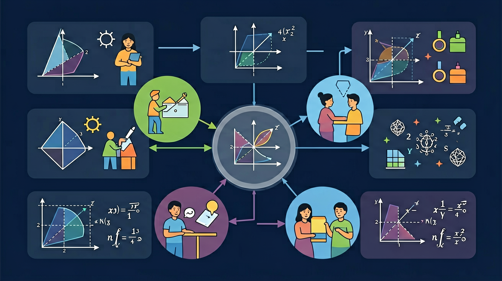

❓ 为什么手机亮度调高后，续航时间下降得特别快？
❓ y=x²和y=x³长得像双胞胎，怎么区分谁增长得更猛？
❓ 学幂函数能帮我算清楚存钱利息怎么翻倍吗？
学完这一课，这些问题你都能自信地回答。

下列函数中，属于幂函数的是？
高中数学 · 必修一 · 函数单元
掌握幂函数的定义，能识别幂函数与指数函数的区别
掌握五种典型幂函数的图像特征与单调性、奇偶性
能运用幂函数性质比较大小、解决简单实际问题
一般地，函数 y = xα 叫做幂函数，其中 x 是自变量，α 是常数（α ∈ R）。
| 函数类型 | 一般形式 | 自变量位置 | 例子 |
|---|---|---|---|
| 幂函数 | y = xα | 底数 | y = x² |
| 指数函数 | y = ax | 指数 | y = 2x |
| 函数 | 定义域 | 值域 | 奇偶性 | 单调性 |
|---|---|---|---|---|
| y = x-2 | x ≠ 0 | y > 0 | 偶函数 | (-∞,0)↑ (0,+∞)↓ |
| y = x-1 | x ≠ 0 | y ≠ 0 | 奇函数 | (-∞,0)↓ (0,+∞)↓ |
| y = x | R | R | 奇函数 | R 上单调递增 |
| y = x2 | R | y ≥ 0 | 偶函数 | (-∞,0]↓ [0,+∞)↑ |
| y = x3 | R | R | 奇函数 | R 上单调递增 |
对于幂函数 y = xα：
比较幂函数值的常用方法：
∵ α = 0.3 > 0，y = x0.3 在 (0,+∞) 递增
∴ 1.50.3 > 1.20.3
对于幂函数 y = xα，其奇偶性由指数 α 决定：
| α 的特征 | 奇偶性 | 举例 | 对称性 |
|---|---|---|---|
| α 为奇数 | 奇函数 | y = x, x³, x⁻¹ | 关于原点对称 |
| α 为偶数 | 偶函数 | y = x², x⁻², x⁴ | 关于 y 轴对称 |
| α 为非整数 | 需具体分析 | y = x½ | 定义域不对称，非奇非偶 |
f(-x) = (-x)³ = -x³ = -f(x)
∴ f(x) = x³ 是奇函数
拖动滑块观察不同 α 值下幂函数图像的变化
1. 什么是幂函数？2. 幂函数的图像通常呈现什么形状？3. 幂函数的导数公式是什么？
1. 幂函数 f(x) = x^3 的导数是？2. 幂函数 f(x) = x^2 的积分是？3. 幂函数 f(x) = x^2 和 g(x) = x + 1 的复合函数是？
常见误区：学生常将幂函数与指数函数混淆，认为两者是相同的。错因：幂函数和指数函数的定义不同，幂函数的自变量在底数位置，而指数函数的自变量在指数位置。诊断：通过具体例子和图像对比，帮助学生区分幂函数和指数函数。
迁移挑战：设计一个实际问题，要求使用幂函数进行建模和分析。例如，分析某城市人口增长的趋势，使用幂函数进行预测，并解释模型的合理性和局限性。
先独立作答，再点选项查看对错与错因。
下列函数中，属于幂函数的是
若幂函数y = x^a的图像经过点(2,8)，则a的值为
关于幂函数y = x^(-2)，下列说法正确的是
幂函数y = x^(1/3)的定义域是____
答案：全体实数
立方根函数定义域为全体实数
若幂函数y = x^a的图像经过点(3,27)，则a的值为____
答案：3
将点(3,27)代入函数，27 = 3^a，解得a=3
下列哪个选项最能描述幂函数的特征
收集不同亮度下手机续航时间的数据，分析其关系
把x^a拆成底数x和指数a两部分，像拆乐高积木
指数a是增长加速器，a越大函数跑得越快
对比a>1和0<a<1的图像，像比较火箭和自行车速度
用手机电量消耗案例可视化幂函数变化
把幂函数规律迁移到银行复利计算场景
✅ 指数函数是a^x，幂函数是x^a
💡 混淆自变量位置
✅ 实际是双曲线，定义域x≠0
💡 负指数性质理解不深
口诀：底数肩上坐指数，大于1时向上冲，小于1时慢慢走
类比：像汽车油门，指数a就是油门深度，踩得越猛速度飙升越快
And：学生已掌握一次函数和二次函数
But：当指数继续增大时图像会怎样变化？
Therefore：理解高次幂函数的基本特征
幂函数形如y=xⁿ（n为常数）。当n=1时是直线，n=2时是抛物线。例如y=x³：当x=2时y=8，x=-2时y=-8，图像呈'S'型穿过原点。n越大，曲线在x>1时上升越快，在0<x<1时越平缓。
🌍 手机亮度调节：亮度从20%调到40%（1.2³≈1.7倍），但电量消耗可能是2⁴=16倍！这就是幂函数在科技中的应用。
y=x⁴的图像在x=2处的函数值是？
And：知道奇偶函数定义
But：为什么x³和x⁴的图像对称性不同？
Therefore：掌握指数奇偶对图像的影响
当n为奇数时（如y=x⁵），函数关于原点对称：(-2)⁵=-32对应2⁵=32。当n为偶数时（如y=x⁶），函数关于y轴对称：(-3)⁶=729=3⁶。例如y=x³和y=x⁴在x=1时都等于1，但在x=-1时分别得-1和1。
🌍 汽车油门深度与动力输出：轻踩（x小）时变化平缓，重踩（x大）时动力猛增，类似奇次幂函数特征。
下列哪个函数图像关于y轴对称？
And：会画不同幂函数图像
But：为什么x⁵比x³上升得更快？
Therefore：理解指数大小对增长速率的影响
比较y=x³和y=x⁵：当x=1时都等于1，但x=2时分别是8和32，x=3时是27和243。指数越大，在x>1时函数值增长越迅猛。反之在0<x<1时：x=0.5时，x³=0.125而x⁵≈0.03，指数越大函数值越小。
🌍 病毒传播初期（x<1）要严格控制，因为后期（x>1）感染人数会呈高次幂暴增。
当x=1.5时，哪个函数值最大？
And：理解正整数指数幂
But：x⁻²和x²有什么关系？
Therefore：掌握负指数幂的图像特征
负指数幂函数y=x⁻ⁿ=1/xⁿ。例如y=x⁻²：x=2时y=0.25，x=3时y≈0.11，图像在第一象限从无限高快速下降。与y=x²对比：当x=2时，x²=4而x⁻²=0.25，两者互为倒数关系。注意x≠0。
🌍 手机离路由器距离（x）与信号强度（y）：距离加倍时，信号强度可能变为1/4（类似x⁻²关系）。
y=x⁻³在x=2时的值是？